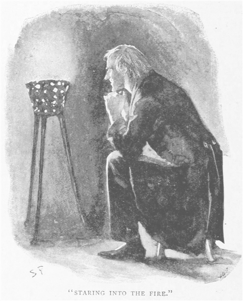
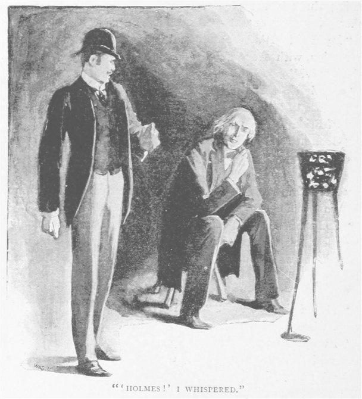
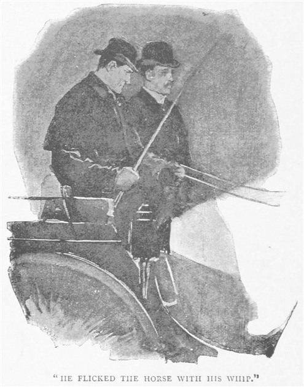
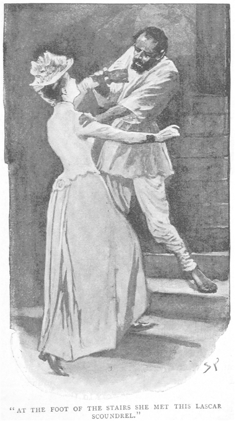
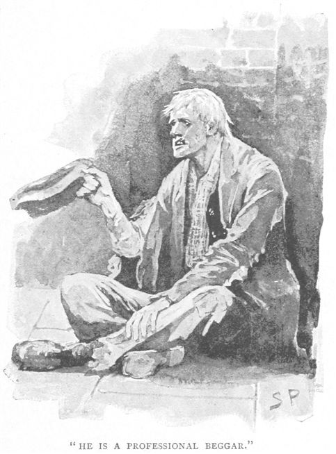
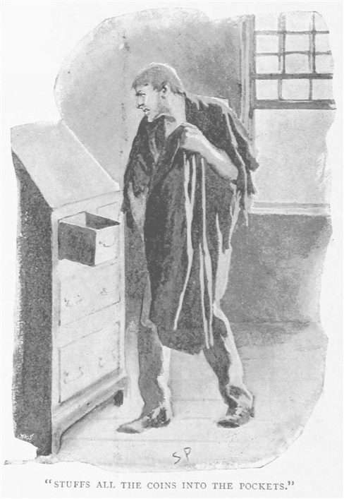
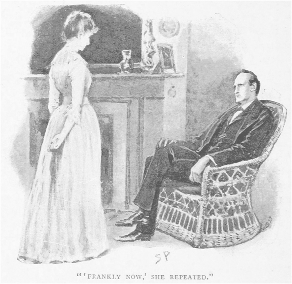
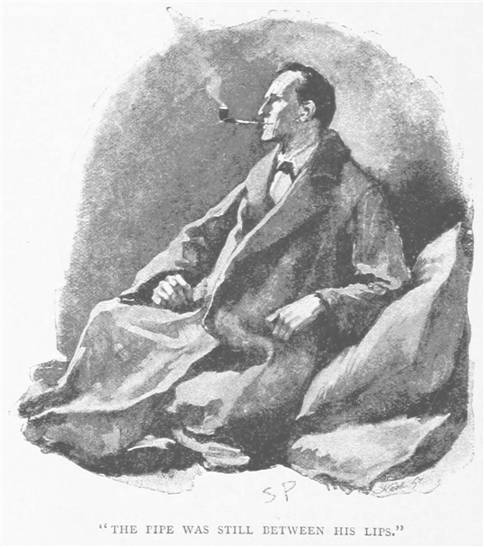
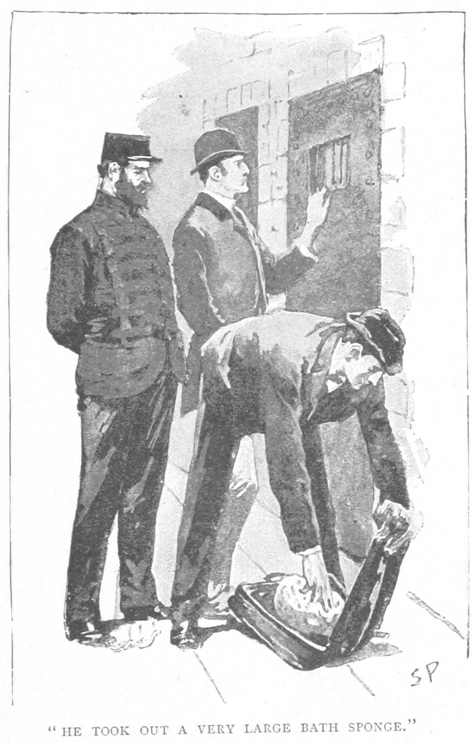
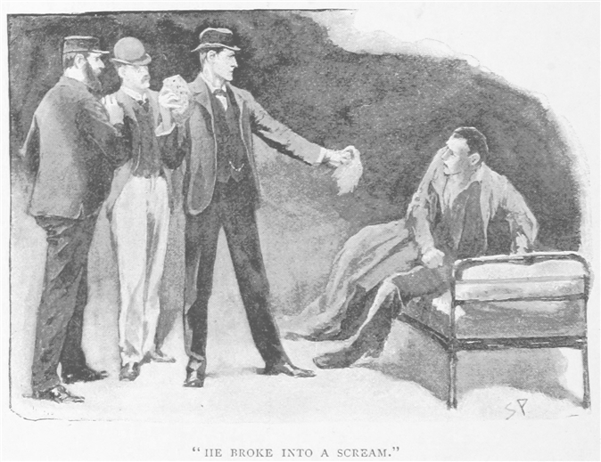

アイザ・ホイットニ、
ある晩――八九年の六月のことだが――我が医院の呼び鈴が鳴った。おおよそ人が欠伸でも始め、時計でも見やるような時刻のことだった。私は椅子から身を起こし、妻の方はその針仕事を膝の上に置いて、いささかやれやれという顔をした。
「患者ね！」と妻が言う。「お出にならなきゃ。」
私はうなった。一日たっぷり仕事にいそしんで、帰ってきたばかりなのだった。
扉の開く音が聞こえ、早口の言葉と、そのあとリノリウムの床をせかせかと歩く音。今いる部屋の戸が開け放たれると、喪服に黒い
「夜分遅くに申し訳ありません。」というと、女性はそこで緊張の糸が切れたのか、私の妻に飛びつくと、首に手を回しながら肩を震わせ
「まあ。」と妻はその女性の面紗をめくって、「ケイト・ホイットニじゃないの、驚いた。ケイト、誰が入ってきたのかと思ったら。」
「どうしたらいいか分からなくて、それでまっすぐあなたのところへ。」いつものことだった。困ったことがあると、人は妻のところにやってくる。灯台に集まる鳥のようだ。
「いつでも大歓迎よ。まずはワインとか水でも口にして、腰を下ろして落ち着いたら、事の次第をお話ししてね。ジェイムズには先に寝ててもらった方がいいかしら？」
「あっ、違うの！ お医者さまの助けも必要なの。アイザのことで。もう二日も家を空けてて。もう心配で心配で！」
これが初めてではなかった。この女性が厄介な夫の相談を持ち込んでは、私は医者として、妻は昔からの友人として学友として、その話を聴くのであった。私たちは思いつくだけ言葉をかけて、その女性をなだめた。夫の居場所を知っているのだろうか。そして連れ戻してほしいということだろうか。
どうやらその通りらしい。近ごろ発作を起こすと、
事情があるのだから、無論その場合、道はひとつしかない。ご婦人をそのような場所へお連れするわけにもいかず、そもそもご婦人本人が行く道理もない。私がホイットニの主治医なのであり、それゆえに私ならば言うことも聴いてくれよう。むしろ私ひとりの方がやりやすいというものだ。そこで私はその女性に約束した。教えてもらった住所に夫がいるようなら、二時間とかからず自宅へ連れて行けましょうと。そして一〇分ののち、私は肘掛椅子と心地よい居間をあとにして、ハンソム馬車を東へ急がせた。その時点でも妙なお使いだと思っていたが、そのあとの展開があれほど不思議なものになるとは、私はまだ知るよしもなかったのだ。
事件も始まりの段階では、さほどややこしくもなかった。アッパ・スウォンダム横町はいかがわしい路地で、波止場の集まる地区の裏手にあたる。テムズ川の北岸、ロンドン橋から東側へ伸びている区域だ。安物の既製服を売る店と
薄闇の向こうに、ちらちらとかすかに人の影が見えるだろうか。我を失い、妙な姿勢で寝そべっている。肩をだらんとさせ、膝を曲げ、頭を後ろにそらして、顎を上向きにしている。あちこちから、どんよりと濁った目が新入りに向けられる。黒い人影のあるところからは、赤く丸い小さな光が、あるときは強くあるときは弱く、金属製の

私が入ると、血色の悪いマレー人の係員が、私用の煙管と薬を急いで持ってきて、空いている寝台へ案内しようとしたので、
「結構。吸いに来たのではない。」と私は言った。「ここに知り合いがいる。アイザ・ホイットニさんだ。話がしたい。」
すると私の右手から声を発して動くものがあり、薄闇のなかのぞき込むと、ホイットニだとわかった。顔は青白くやつれて、汚れてもいて、私の方を見つめる。
「これは、ワトソンじゃないか！」と声を出すものの、薬の反動か弱々しくぼろぼろの
「もう一一時だ。」
「何曜日の？」
「金曜日、六月一九日だ。」
「なんだって？ 水曜だと思ってた。今日は水曜だよ。こんなやつだからっておどかそうってのか？」と顔を腕のなかに
「何度も言うが、今日は金曜なんだ。奥さんが二日も帰りを待っとる。恥ずかしいと思わんのかね！」
「そりゃあそうだけど、訳が分からないよ、ワトソン。ここにいたのはほんの数時間で、三服、四服――数は忘れたけど、でも一緒に家へ帰るよ。ケイトを心配させたくない――かわいそうにケイト。手を貸してくれ。馬車で来たのか？」
「ああ、外で待たせてある。」
「ならそれで行こう。その前に支払いをすませなきゃ。代金を聞いてくれ、ワトソン。僕はもう駄目だ。ひとりじゃ何もできない。」
私は狭い道を歩いていく。両側では人が寝ころんでいて、薬の汚れた煙を吸って私までぼうっとならないよう気をつけながら、辺りを見回して店の主人を捜した。火鉢のわきにいる長身の老人の横を通ったとき、ふいに衣服の裾を捕まれ、小声でこう囁かれた。「そのまま通り過ぎる。そのあと振り返り、こちらを見ること。」と、以上の言葉がしっかり耳に入った。私は目を落とした。わきにいる老人がしゃべったとしか思えないが、座り込んだままうっとりしているし、がりがりで、皺だらけで、年で背も曲がり、阿片の煙管を膝のあいだからぶら下げなどしている。全身の力が抜けて、指から転げ落ちたとでもいうのか。私は一歩前に進んで、後ろを見る。その瞬間、驚いて声が出そうなのを押し殺すので精一杯だった。その男は私にだけ顔が見えるようくるりと振り向いたのだが、身体には肉がつき、皺もなくなり、うつろな目にも火が戻り、そして目の前、火のそばに座ったまま、私が驚くのをほくそ笑むのは、誰あろうシャーロック・ホームズだったのだ。ホームズは私を招く素振りを見せてから、すぐに顔を仲間の方へくいっと戻したが、もうよぼよぼで口元のゆるんだ老人に身をやつしていた。

「ホームズ！」と私は囁く。「いったいこんなところで何をしている？」
「できるだけ小声で。」とホームズが答える。「僕の耳は近いから。あの薬びたりのご友人とやらをどけてくれると、たいそう恩に着るのだが。それと君と少し話ができれば、この上なく幸いだ。」
「外で馬車を待たせてある。」
「ならばその馬車で彼をひとり送り返すといい。あの男のことなら心配無用だ。どうせ歩くのもおぼつかぬから、悪いことなどもうできまい。それから御者に
シャーロック・ホームズの頼みとあらば、断ることは難しい。常にきわめて的確で、有無を言わせぬ凄みがある。それに、私もホイットニをいったん馬車に乗せれば、仕事は終わったも同然と考えていい。そしてそのあとで我が友人と奇妙な事件のひとつでも一緒できるのなら、これ以上は望みようもない。私は言伝を書いて、ホイットニの利用料を払い、数分のうちに馬車まで連れて行って、夜のなかへ走り出すのを見送った。それからほどなくして阿片窟からあの老人が現れ、私はシャーロック・ホームズとともに表を歩き出した。通りをふたつ過ぎるあいだは、背も曲げて足取りもおぼつかない感じにちょこちょこと歩いていたが、越えると背をまっすぐにして、いきなり声を出して高らかに笑い始めた。
「どうも、ワトソン。」と話を切り出す。「君は僕がコカイン注射の次に阿片を吸い出したと思っているようだ。なにぶん、他にも、君の医学的見地なるもののご託宣では、弱いところがあるそうだから。」
「まったく、あんなところで出くわしてたまげたよ。」
「いや、僕の方こそ。」
「知り合いを探しに来たんだ。」
「僕は敵を探しに。」
「敵？」
「そうだ。宿敵のひとり、いやこう言うべきか。狙った獲物と。とにかく、ワトソン、僕は今、きわめて驚くべき捜査のまっただなかで、前にもやったことがあるのだが、あんな連中のとりとめない話からでも、手がかりが見つけられないかと思って。あの阿片窟で正体がばれたら、僕の命は一時間ともたなかったろう。以前、個人的な理由で利用させてもらったのだが、あそこを営んでいるインド人の船乗りが悪党で、僕に復讐すると息巻いているのだ。あの建物の裏には跳ね上げ式の出口があって、ポールズ埠頭の角がそばなのだが、あそこに口がついていれば、月のない夜、何が通っているのか何か不思議な話でもしてくれるかもしれぬ。」
「何と！ まさか死体のことかね？」
「さよう、死体だ。ワトソン、あの阿片窟で、哀れな男が死に追いやられるたびに一〇〇〇ポンドもらえるとしたら、我々は大富豪になれる。河岸地区全体でも最低最悪の地獄の馬車で、僕もネヴィル・シンクレアが入ったきり出てこないのではと心配している。ところで、我々の馬車がここにあるはずだ。」ホームズは両の人差し指を歯に差し入れ、鋭く笛を鳴らす――遠くの方から同じ笛の音で応答の合図があり、間髪入れずに続くのは
「さあ、ワトソン。」とホームズが言うと、薄闇を抜けて、高さのある
「ついてくるだろう？」
「お役に立てるなら。」
「うむ、頼りになる相棒がいれば常にありがたい。記録してくれるとあってはなおさらだ。シーダーズ荘にある僕用の部屋には、寝台がふたつあったな。」
「シーダーズ荘？」
「ああ、そこがシンクレア氏の自宅だ。捜査のあいだ居候している。」
「場所は？」
「ケント州リーの近く。馬車で七マイルの道のりだ。」
「しかし、まだ何も見えないのだが。」
「むろんそうだろう。じきにみなわかる。ここに上がりたまえ。ご苦労、ジョン、ふたりで大丈夫だ。半クラウンをやろう。明日、一一時頃にまた頼む。手綱をゆるめて、さらばだ、それ！」

ホームズが馬に鞭を振るうと、馬車は走り出し、どこまでも続く薄暗くさびれた通りを過ぎてゆく。徐々に道幅が広がり、やがて手すりのついた広い橋に差し掛かって、ゆっくりと流れるよどんだ川を越える。向こう岸にはまた煉瓦とモルタルの人気のない町並みがあり、その静けさを破るものといえば、警官の重く規則的な足音か、遅くまで飲み過ぎた酔いどれが群れてやらかす歌か叫び声くらいだ。漠としたちぎれ雲が夜空をゆるやかにたゆたい、星がひとつふたつ、雲の切れ間からところどころで瞬いている。ホームズは無言で馬車を進めつつも、頭を腕に
「君は押し黙ることにかけては大天才だ、ワトソン。」とホームズ。「その点を考えれば、もはや相棒としての価値はつけがたいほどだ。請け合うが、話したいときに話ができる相手というのは、僕のようなものには至極大切で、考え自体がやたら面白いというわけではないのでね。戸口で顔を合わせたとき、あのけなげなご婦人に今夜は何を言えばよかろうかと悩んでいたのだ。」
「そもそも私は何も事情を知らんのだが。」
「ちょうどいい、リーに着く前に事件の仔細を話そう。一見ひどく単純なのだが、どういうわけかとっかかりがつかめない。糸口はたくさんあるに違いないが、その端を手でつかむことができない。さて、事件を手短にまとめよう。ワトソン、君なら闇だと思われるところに光を見つけるかもしれない。」
「では始めてくれ。」
「数年前――正確には一八八四年五月――リーにネヴィル・シンクレアという名の紳士がやってきたのだが、財産があるらしく、大きな屋敷を手に入れ、敷地にも手を加えて整え、暮らし向きも普通に良いようであった。次第に近隣にも知り合いができ、一八八七年、地元の造り酒屋の娘と結婚、そのあいだに二児をももうけた。男に定職はなかったが、いくつかの会社に出資しているらしく、決まって朝は市街地へ出向き、毎晩キャノン街から五時一四分の列車で帰ってくる。シンクレア氏は当年三七歳で、悪癖もなく、いい夫であり、愛情のある父親で、つきあう人みなから好感を持たれている。付け加えると、現時点での負債の総額が、確認できる限りでは八八ポンド一〇シリング、一方でキャピタル＆カウンティーズ銀行の預金残高は二二〇ポンドある。それゆえ、金銭問題が本人の心に重くのしかかっているというのは筋違いと言えよう。
今週の月曜、ネヴィル・シンクレア氏はいつもより早めに街へ向かい、出がけにこういった。大事な用事がふたつほどある。うちの坊やに積み木を一箱買って帰る、と。さて、ほんの偶然だが、その御前様はその月曜に一通の電報を受け取っていて、夫が出かけたすぐあとだったのだが、その内容は、お待ちかねの大事な小包がアバディーン海運会社の事業所で取り置きされているとのことだったそうだ。このなじみのロンドンに詳しければ、その会社の事業所とやらがフレズノウ街にあって、アッパ・スウォンダム横町から出たところにあるとわかるだろう。今晩、僕を見かけた場所の表にあたる。シンクレア夫人は朝食を摂ってから中心区に出かけ、少し買い物をしたのちその事業所へ行き、小包を受け取ったのだが、そこから駅へ向かう際にスウォンダム横町に入り込んでしまって、それがちょうど四時三五分のことだ。ここまでのところはいいかい？」
「じゅうぶんだ。」
「思い出してほしいのだが、月曜はかなり暑い日で、シンクレア夫人はゆっくり歩きながら、馬車でもないかとあたりを見回した。あまりよろしくないところに足を踏み入れたと思ったろう。とにかくスウォンダム横町を進んでいたところ、いきなり叫び声とも悲鳴ともつかぬものを耳にして、不意に目をやると、自分の夫が上から見下ろしていて、どうも、三階の窓から自分を招いているようだったというのだ。その窓は開いていて、夫の顔をはっきり目にしたのだが、彼女の話では、ひどくうろたえていたともいう。夫は彼女の方へ必死に手を振り、そのあとぱっと窓からいなくなったので、どうも後ろから力づくで無理に引っ込まされたのだと思えたらしい。ひとつ妙な点を、女の鋭い目というものが捉えていて、出るときに同じ暗色の外套を着ていたのだが、襟もネクタイもなかったのだという。

何かまずいことが夫に起こったのだと確信して、目の前の段を駆け下りたが――その建物が他ならぬ今晩君が僕を見つけた阿片窟で――正面の部屋を走り抜けて二階へ続く階段を上ろうとした。だが階段の下のところで、先ほど話題にも出たやくざな船乗りに出くわし、押しとどめられて、さらにそこで手伝いをやっているデンマーク人も加わって、ついには表へ追い出されてしまった。気が変になりそうなくらい、不安と恐れでいっぱいになり、横町を走り出たのだが、たまたま運の良いことに、フレズノウ街で警察の一隊にぶつかった。みな巡回の最中だったので、警部と巡査二名が彼女に同行し、店主が引き続き抵抗するのをものともせず、さきほどシンクレア氏が見えた部屋に踏み込んだ。そこに夫の気配はなく、事実、その階全体にはひとりを除いて誰もいなかった。そのひとりにしても、足の悪いひどい身なりのろくでなしで、どうもそこを寝床としているらしかった。その男もインド人も、今日の午後はその通りに面した部屋に他の人間はいなかったと強く言い張った。あまりにも強硬に否定するので、警部も心がぐらついて、シンクレア夫人が見間違えたのだと信じそうになった。が、そのとき、夫人が声を上げて卓上に置かれてあった小さな松の木箱に飛びつき、蓋を力任せに外した。するとそこから子ども用の積み木が転げ落ちる。夫が買ってくると約束した玩具だ。
それが見つかったことと、またそのろくでなしがはっきりと動揺を示したこともあって、警部も事の深刻さを認識した。部屋を入念に調べた結果、忌まわしい犯罪が行われたと断ぜざるを得ない。通りに面した部屋には、居間として必要最低限の家具が揃えられていて、その奥に小さな寝室があるのだが、そちらはとある波止場の裏側に接している。波止場と寝室の窓のあいだに、幅の狭い水路があって、引き潮のときは水もないが、満ち潮のときは少なくとも四と二分の一フィートの水位がある。寝室の窓は大きめで、下から押し上げると開く種類だ。調べてみるとすぐに血痕が窓台のところに見つかって、転々と落ちた跡が寝室の木の床にも確認できる。通り側の部屋、
さて、次は事件に直接関与していると見られる悪党どもについてだ。インド人の船乗りは、経歴こそ大悪党として知られた男だが、ことシンクレア氏の件については、夫が窓際に姿を見せた数秒後には階段の下にいたことがわかっているから、この犯罪においては従犯程度の役割しかないだろう。供述では、まったく無関係だと言い、話を訊けば、下宿人ヒュー・ブーンのやらかしたことは何も知らないし、消えた紳士の衣服があることについては自分は何もわからないという。

店主のインド人についてはそれでよいとして、次は怪しいろくでなしの方だが、こやつがその阿片窟の三階に住んでおり、ネヴィル・シンクレア氏を最後に目撃したはずの人間となる。名前はヒュー・ブーン、その醜い顔は中心区をよく出歩く者なら誰でも見覚えがあるはずだ。生業として乞食をやっているが、警察の取り締まりを逃れようと、建前では蝋マッチのちょっとした商いをやっていることになっている。スレッドニードル街を少し下がったあたり、左手に、知っているかもしれないが、壁に引っ込んだところがある。そこにそやつは毎日腰を下ろして、あぐらをかいて、膝の下にマッチの在庫を少しばかり置けば、いかにも見た目が哀れを誘うので、善意の小雨が降る、されば受け皿として、
「しかし足が悪い！」と私は言う。「そんなやつが盛りの男に対して、ひとりで何ができるというんだね。」
「確かに、歩く際、足を引きずらねばならぬ。だがそれ以外は、力も強く、健康な男だと言えよう。君も医者の経験からわかるだろう、ワトソン、どこか一箇所が悪くても、たいてい他のところが発達して、それを補うものだ。」
「そのまま話を。」
「シンクレア夫人は窓の血痕を見て卒倒し、警察の馬車で自宅まで運ばれた。現場にいても捜査の役に立ちそうにないからね。バートン警部がこの事件を受け持つことになり、屋内をくまなく調べたのだが、事件の手がかりになりそうなものは何も見つからなかった。ぬかったことにブーンをすぐ逮捕せず、数分の余裕を与えてしまい、そのあいだに友人のインド人と話をさせてしまった。やがて挽回しようと男を取り押さえ身体検査したが、立件できるほどの証拠は見あたらない。実際には、肌着の右袖に血痕がいくつか付着していたのだが、その男は薬指を差し出し、爪の近くを切ったのでそこから血が出たのだといい、さきほどまで窓の側にいたから、あそこで見つかった血痕も、この傷から出たものに相違ないのだと言い添える始末。これまでネヴィル・シンクレアなる人物など見たこともないと執拗に言い張り、自分の部屋にあった衣類は、警察同様、自分にも謎だと言い切るのだ。シンクレア夫人は、窓際に夫がいるのをはっきり見たと言うが、頭がおかしくなったか、夢でも見たのではないかという。声を張り上げ抵抗したが、男は署まで連行され、一方で警部は現場に居残った。潮が引けば新たな証拠が得られることもあろうと考えたわけだ。
結果、見つかると危ぶんでいたものは何も出てこなかった。あるといってもネヴィル・シンクレアの外套だけで、ネヴィル・シンクレア本人ではなかったのだ。潮が引いて底が見えるようになったわけだが、出てきた外套、懐から何が見つかったと思うね？」
「想像もつかんよ。」
「ああ、つかんだろうとも。両のかくしに詰め込まれていたのは、一ペニィの青銅貨と半ペニィの銅貨――それぞれ四二一枚と七二〇枚。潮に流されなかったのもうなずける。だが人体の方は別だったというわけだ。波止場と建物のあいだの水路は、流れが急であったから、重くなった外套だけが残って、人間の方は脱げて川へ引き込まれた、そんな考えもじゅうぶん成り立つ。」
「しかし、話では他の衣類はみな部屋の方で見つかったとか。では死体は外套だけを着せられていたというのか？」
「うむ、違うか。もっともらしく思えたのだが。では仮に、このブーンという男がネヴィル・シンクレアを窓から投げたとして、その行為を目撃した人間はいない。では次の行動は何だ。もちろん、すぐさま頭によぎるのは、証拠となる衣類の処理だ。そこで外套をつかんで外へ放り投げるとする。だがそれだと沈まずに流れてしまうと考える。時間がない。階下から争う物音がする。御前様が押し切ろうとしている、あるいは共犯のインド人からすぐにでも通りにいた警察がやってくると聞いていたのかもしれぬ。ぐずぐずしている暇はない。秘密の隠し場所へ駆け寄り、そこに物乞いでの収入が積み立ててあったので、その貨幣を手につかめるだけつかんで、外套がしっかり沈むよう、かくしに詰め込んだ。投げ込む。他のものについても同じ事をするつもりだったのだろう。だが下から駆け上がってくる音が聞こえてしまう。窓を閉めるだけ閉める。ちょうどそのとき、警察が現る。」

「それならありそうだ。」
「うむ。他に良さそうな考えもないので、こいつを作業仮説としよう。ブーンはさきほども言ったように、身柄を拘束され署に連行されたが、今までの行状に悪いところがあったわけではない。長年、乞食を生業にしてきたことは周知の事実だが、これまでの生活は平穏で、罪を犯したこともない。以上が事件の現状だが、明らかにすべき問題は――ネヴィル・シンクレアは阿片窟で何をしていたのか。その場所で彼の身に何があったのか。今どこにいるのか。ヒュー・ブーンは男の失踪にどう関与しているのか――いずれもなかなかはっきりしそうにない。正直、今までにない種類の事件だ。初見では単純そうに見えたが、これほど難しくなるとは。」
シャーロック・ホームズがこの一連の奇妙な出来事を仔細に語っているあいだ、馬車は大都市の郊外のただなかを走っていたが、やがて点在していた家屋も見えなくなり、両側にはただ田舎らしい垣根だけとなり、その間は轍の音だけが響いていた。だが話の終わる頃には、また村に入っていて、両側の家々からわずかな明かりが見える。
「今、リーの郊外にいる。」と我が友人。「この短時間の移動のあいだで、みっつの州をかすめていったわけだ。ミドルセックスに始まり、サリィの端を抜けて、ケントで終わる。木々のあいだから明かりが見えるだろう？ あそこがシーダーズ荘だ。そしてその明かりのかたわらで、ご婦人が腰をかけている。心配で耳を立てているから、きっと馬車の蹄も聞こえているだろう。」
「しかし今回はどうしてベイカー街の外で事件を扱っているんだ？」と私は訊いた。
「理由は、ここで調べねばならぬことがいくつもあるからだ。シンクレア夫人は気前よく二部屋を自由に使わせてくれているし、僕の友人かつ協力者とくれば絶対に歓迎してくれるから、安心していい。会うのは気が引けるね、ワトソン、夫に関して新たな情報がない。到着。ドードー、ここだ、ドードー。」
庭つきの大きな屋敷の前に馬車を止めた。馬番の少年が馬の口を取りに出てくる。私は飛び降りて、ホームズのあとにつづいて曲がりくねった砂利の小道を進み、建物へと向かう。たどり着くより前に扉が勢いよく開き、金髪の小柄な女性が戸口に立った。服の生地は絹モスリンで、首と袖口に綿毛のレース、光の洪水を浴びて、立ち姿がぼうっと浮かび上がり、片手を扉にかけて、もう一方の手は待ちかねたとばかりに、つと前に出している。その姿態はわずかに傾けられ、期待する目に半開きの口。まさに問いかける立像とでも言えようか。
「あの。」と女性は声を出す。「あの。」とそのあと、ふたりの人影が見えたので、歓声を上げたが、我が友人が首を振って肩をすくめると、ため息に変わる。
「良い知らせは何も？」
「何も。」
「悪い知らせは？」
「ありません。」
「良かった。さあ、なかへ。お疲れでしょう。もう遅いですから。」
「こちらは友人で医師のワトソン。事件のいくつかでは大活躍を。幸い、今回も出てきて、この捜査に協力してくれることになりました。」
「お会いできて光栄です。」と依頼人は手をあたたかく差し伸べる。「色々と行き届かぬこともありましょうが、どうかお許しを。突然うちじゅうに嵐が吹き荒れたもので。」
「奥さま。」と私。「私には昔、従軍経験があります。そうでなくとも、ご事情はわかっておりますから、どうぞ恐縮なさらず、あなたにも我が友人にも、何かのお役に立てるなら、それだけで幸いです。」
我々が明るく照らされた食堂に入ると、卓上には夜食が並べられていた。「あの、シャーロック・ホームズさま。」と依頼人は言葉をかける。「伺いたいことがございまして、ひとつふたつなんですが、簡単にお答えいただいてもよろしいでしょうか。」
「何なりと。」
「わたくしのことはお気兼ねなく。騒いだりしませんし、気もしっかりしております。先生の、率直なご意見を伺いたいだけなのです。」
「して、その内容は？」
「先生、本心では、ネヴィルは生きているとお考えですか。」
シャーロック・ホームズはその問いかけに困惑しているようだった。「率直に、あの！」と畳みかける依頼人。絨毯に立ったまま一心に見つめるので、ホームズも柳の安楽椅子にもたれかかる。

「率直に、ということなら、否です。」
「死んでいるとお思いで。」
「ええ。」
「殺されて？」
「言い切れませんが、おそらくは。」
「では、いつ亡くなったのでしょう。」
「月曜に。」
「でしたら、先生なら、こちらの意味もご説明いただけるでしょうか。今日、あの人からの手紙を受け取ったんです。」
シャーロック・ホームズは椅子から飛び上がった。あたかも電気が走ったかのようだった。
「何と！」とホームズはうなる。
「ええ、今日なんです。」依頼人は立ったまま口元をゆるめ、どうしていいかわからないというふうに、一切れの紙を示した。
「見てもよろしいですか？」
「どうぞ。」
矢も楯もたまらず紙をつかみ取り、ホームズはそれを卓上に広げ、ランプをかざして、食い入るようにあらためた。私も席を立って、ホームズの肩越しに眺めた。封筒の材質も悪く、押されてあるのはグレイヴズエンドの消印で、まさに日付は本日、いや昨日か、零時はとうに過ぎていた。
「字が荒い。」とホームズがつぶやく。「とすると、これは配偶者の筆跡ではない、そうですね？」
「ええ、でも中身は。」
「もうひとつわかるのは、その誰かしらは、封筒に宛名を書いてから、いったん住所を調べに出た。」
「どういう意味でしょう。」
「宛名が、ほら、インクで真っ黒です。自然乾燥です。残りは灰色で、見たところ吸取紙を使っている。もし一気に書かれ、そのあと吸取紙をかけたのなら、インクで真っ黒ににじんだりはしない。この男は名前を書いて、住所を書く前に手を止めた。つまりその住所を書き慣れてないという事実を指し示します。もちろん、些細なことですが、些細なことほど重要なものはありません。さて手紙を読みましょう。おや！ 何かなかに入っている！」
「ええ、指環です。
「では、なかは配偶者の筆跡に間違いないと。」
「そのひとつです。」
「ひとつ？」
「書き散らしたときの筆跡です。普段はこうではありませんが、よくわかります。」
愛しい人よ 心配しないで 大丈夫 大きな間違いがあって すぐには終わらないかもしれない 辛抱強く待つように
ネヴィル
「鉛筆で、本の遊び紙に書かれている。大きさは八折判、透かしはない。ふむ！ 指の汚れた男が本日グレイヴズエンドで投函か。ほう！ そして封筒の折り返しはゴムで貼り付けてあり、間違いでなければ、煙草を噛んでいた男がやった。そして配偶者の筆跡に間違いない、そうですね？」
「ええ、ネヴィルの書いた字です。」
「そしてグレイヴズエンドで投函されたのが今日。うむ、シンクレアさん、雲が晴れてきましたが、危険が去ったとは言い切れません。」
「ですが、これで生存に間違いはないでしょう、ホームズ先生。」
「これが、我々を攪乱する巧妙な偽手紙でないとしたら、です。指環は結局、何の証明にもなりません。奪い取ったとも考えられましょう。」
「いえ、いいえ、そうです、これは本当にあの人の字です！」
「その通り。ですが月曜に書かれて、今日出されただけかもしれません。」
「そう、ですね。」
「だとすると、そのあいだに、それなりのことが起こったとも。」
「ああ、気の滅入ることをおっしゃらないで、ホームズ先生。あの人は大丈夫です。わたくしどもは心が強く通じ合っておりますから、何か悪いことがあればわかるはずです。最後に夫の姿を目にしたその日、あの人、寝室で怪我をしたんです。でも、わたくしは食堂にいたのですが、すぐに階段を駆け上りました。何かが起こったのだと、強い予感があったのです。そんなささいなことでも感じるのに、死んで何もないなんて、そんな。」
「女性の勘は、分析的推理の結論よりも重いことがある。それは嫌と言うほどわかっております。そしてこの手紙で、あなたは自分の直感が正しいと思えるような、強い証拠をひとかけら手に入れたように思えた。ですが、もしあなたの配偶者が生きて手紙を書いたのだとしたら、どうして今、目の前に現れないのか。」
「わかりません。なぜでしょうか。」
「では月曜、出かける前に何か伝言は？」
「何も。」
「ではスウォンダム横町で見かけて驚かれた。」
「それはもう。」
「窓は開いてましたか。」
「ええ。」
「そのあと、彼はあなたを招いた。」
「そんな気が。」
「確認しますが、その声にならない声というのは、一度だけで？」
「ええ。」
「助けを呼んだとお考えで？」
「ええ、手を振っておりましたので。」
「しかし驚きの声だという可能性もあります。思いもよらずあなたを見かけて仰天し、それで両手を上げたのでは？」
「そうかもしれません。」
「そして彼が引き戻されたのだと。」
「ぱっと、消えたんです。」
「自分で引っ込んだのかもしれない。その部屋に、他に人影は見えなかったのでしょう？」
「ええ。でも、あの恐ろしい男がそこにいたと証言しておりますし、インド人が階段の下に。」
「無論です。彼は、あなたが見た限り、普段通りの服装だった。」
「でも、襟とタイがなくて、喉がむき出しなのがはっきりと。」
「今までスウォンダム横町のことが話題には？」
「一切。」
「阿片に手を出す気配というのは？」
「ございません。」
「結構です、シンクレアさん。このあたりは大事な点ですので、完全にはっきりさせておきたかったのです。では少し夜食をいただいて、部屋へ下がるとしましょう。明日も忙しい一日になりますので。」
部屋は広々として快適で、寝台もふたつあり、自由に使っていいとのことだった。私は早速、敷布のあいだに入った。ここまで夜のあれやこれやで疲れていたのだ。だがシャーロック・ホームズは、心のなかにわだかまる問題があると、何日も、いや何週間も休みなく、そいつをひっくり返しては事実を再び並び替え、隅から隅までじっくり眺め回して、そいつを見極めるか、

「起きたか、ワトソン。」とホームズが訊いてくる。
「ああ。」
「朝の馬車に乗る元気は？」
「よしきた。」
「ならば服を。誰もまだ起きていないが、馬番の少年の寝床はわかっている。すぐに
着替えながら自分の時計に目をやった。誰も起きていないのも無理はない。四時二五分だ。着替えが済むやホームズが戻ってきて、少年が馬の準備をしてくれていると告げた。
「ちょっとした仮説を検証したい。」と言いつつ、ホームズは
「して、どこにある？」と私がほほえむと、
「浴室。」と返ってくる。「ああ、うむ、冗談ではない。」と続け、信じられないという私の顔を見る。「さきほどまでそこにいた。そしてこいつを取ってきた。そこでこいつをこのグラッドストン製の鞄に入れよう。さあ、我が友よ、こいつが鍵穴に合うかどうか確かめに行こう。」
我々はできるだけ早く階下に降りて、外の明るい朝の日差しを浴びた。道の真ん中に馬車が止まっていて、身支度もそこそこの馬番の少年が、その前で待っていた。我々はともに乗り込み、ロンドンへの街道を飛ばした。田舎の荷馬車がちらほらと動いてはいて、野菜を首都へ運んでいたが、両側の邸宅の並びは静かで人気もなく、夢のなかの街を思わせる。
「いくつかの点で、奇妙な事件だった。」とホームズは鞭を打って、馬の速度を最大にする。「正直、
街では早起きの連中がちょうど窓から顔を出し始める頃で、我々の馬車はサリィ州の町並みを抜けていった。ウォータルー橋通りを突っ切って、川を渡り、ウェリントン街を走り、そこで右折、そして気がついたらボウ街にいた。シャーロック・ホームズは警察にも顔が利いて、入口前で二名の巡査が敬礼をした。そのうちのひとりが馬の口を取り、もうひとりがなかへと案内してくれた。
「当直は誰だね？」とホームズは訊ねる。
「ブラッドストリート警部です。」
「ああ、ブラッドストリート、調子はいかがかね？」背が高く図体のでかい警官が、石の敷かれた通路をやってくる。庇のある帽子に、飾りひもの付いた上着を身につけている。「内密の話がしたいのだが、ブラッドストリート。」
「よろしいですとも、ホームズ先生。部屋へお入りください。」
そこは小さく役所然とした部屋で、卓上には大きな台帳があり、壁からは電話が突き出ていた。警部は机の向こうに腰を下ろす。
「わしにできることなら何なりと、ホームズ先生。」
「お願いというのは、あの乞食のことで、ブーン――リーのネヴィル・シンクレア氏失踪への関与を目されている男だ。」
「おお、やつなら出頭させて、取り調べ延長で再勾留されとります。」
「そうらしい。ここにいるのかね？」
「留置場に。」
「おとなしく？」
「まあ、手はかからんです。でも汚くてなあ。」
「汚い？」
「ええ、手しか洗わせてくれんので、顔は職人みたく真っ黒で。まあ、事件に片が付いたら、
「それはひどく会いたいものだな。」
「そうなさいますか？ お安いご用です。こちらへどうぞ。荷物はそのままで結構ですよ。」
「いや、持っていこうと思う。」
「そうですか。こちらです。どうぞどうぞ。」警部を先頭に我々は進み、
「右の三番目に、やつが。」と警部。「ここですな！」と戸の上部にある小窓の蓋を手前に開けて、なかをのぞき込んだ。
「お休み中だ。」と警部。「とくとご覧になれます。」
我々ふたりは目を格子窓の方へ向けた。なかでは人が顔をこちらに向けて寝そべっており、深々と眠っていて、ゆっくりと重く息をしている。中背の男で、連行されたときのままのひどい服装で、色物の肌着がぼろぼろの外套の裂け目からはみ出ている。警部によれば、ものすごく汚いらしく、顔じゅう汚れきっているのだが、それでもその吐き気のする醜さを隠せていないという。古傷が目から頬にかけて一直線に大きく腫れ上がっているため、歯が三本、絶えずむき出しになっている。明るすぎる赤毛の髪はくしゃくしゃに乱れており、垂れる毛で目と額は覆い隠されている。
「ね、見事なものでしょう。」という警部の言葉に、
「洗い落とす必要がある。」とホームズは応える。「こんなこともあろうかと、こちらで道具を持参した。」と言いながらグラッドストン製の鞄を開けると、なんと、大きな大きな浴室用

「ははは！ 物好きな方ですな。」と警部は笑いを抑えきれない。
「さて、ご面倒ですが速やかに戸を開けていただけると幸いです。すぐにでも彼をもっと立派な人物に磨いて差し上げましょう。」
「まあ、断る理由もありませんな。」と警部が言う。「この有様じゃあ、このボウ街の留置場にとっても名誉なことではないですからね。」警部は鍵を穴に差し込み、我々は速やかに独房へ入った。眠っていた男は少し顔を向けたあと、再び深い眠りに落ちた。ホームズは、屈んで水差しを手に取り、海綿に水を含ませ、そのあと独房の男の顔を力強く、ぬぐうように二回こすった。
「皆さまにご紹介しましょう。」とホームズは声を張り上げる。「ケント州リー在住の、ネヴィル・シンクレア氏です。」
我が人生において、このような光景を目の当たりにすることは、もう二度とないだろう。男の顔は海綿によってこそげ落ちた。木から樹皮が剥がれたかのようだ。褐色の汚れはもはやない！ それとともに、頬に大きく付いていた恐ろしい傷痕もなくなり、そしてあざ笑うようにも見えたあのねじれ唇もなくなったのだ！ 引っ張ってもじゃもじゃの赤毛を取り外すと、そこに、寝台に起き直ったのは、青白い悲しげな顔の、品のある男で、黒髪につるつるの肌、目をこすって寝ぼけて戸惑いながらもホームズの方をじろじろと見る。そうしてふと変装を暴かれたことに気づいて、叫び声を上げ、枕に飛びついて顔を

「なんてことだ！」と警部は声を上げる。「これは、こいつこそ、尋ね人じゃないか。写真で見たから知っとるぞ。」
男は観念して、どうにでもなれという風に振り返る。「もしそうだとすれば、教えてくれ、僕の罪は何だ？」
「殺人だ、ネヴィル・シン――ああ、うむ、その罪を問うとしたら自殺未遂で立件せねばならんのか。」と警部は苦笑いをする。「しかし、わしももう警察に二七年もいるが、こりゃ本当に傑作だ。」
「僕がネヴィル・シンクレアなる人物なら、何の犯罪も起きなかったのは明らかです。そしてそれゆえに、僕の勾留は不当です。」
「罪はないが、大きな過ちをひとつ犯している。」とホームズは言う。「もっと自分の御前様を信じるべきではなかったのかね。」
「いえ、妻じゃありません、子どもたちなんです。」と男はうめく。「なんてことだ、子どもたちに父親のことで恥ずかしい思いをしてほしくなかったのです。主よ！ ばれてしまった！ 僕はどうすれば？」
シャーロック・ホームズは、寝椅子に男と並んで腰を落ろし、やさしく肩を叩いた。
「もし事の解明を法廷にゆだねた場合、当然、世間に知れ渡るのは避けられない。一方で、君がもし警察に、自分は何の事件にも巻き込まれていないと納得のいく説明ができるのなら、事の次第が新聞に出ていく法はないと思う。ブラッドストリート警部は、職務上、君がこれから我々に話すことをすべて書き留め、しかるべき上司に提出するだろう。だが事件はそのあと、けして法廷に持ち込まれることはない。」
「ありがとうございます。」と男は熱っぽく声を張り上げる。「耐えることはできるのです、留置、いや罰を受けることだって。でも、この自分の惨めな秘密が家族の汚点となって、子どもを巻き込むのだけは……
あなたは、僕の作り事に気づいた初めての人です。僕の父はチェスタフィールドで学校長をしていて、そこで僕もすぐれた教育を受けました。若い頃は旅をして、舞台にも上がりましたが、結局ロンドンの夕刊紙の記者に落ち着きました。ある日、編集長が首都にいる乞食をネタに連載ものの記事がほしいと言い出して、書き手に僕が志願しました。それがこの話の発端だったのです。単に素人として試みに物乞いをして、自分の身体で取材して、それを元に記事を書いたんです。役者だった頃、もちろん扮装術は学びましたし、その腕前も楽屋では評判でしたからね。その技能を利用したんです。顔を塗って、できるだけ惨めらしくなるよう、大きな傷も付け、そして唇の片側を小さな肌色の絆創膏を使って、ねじれた状態で固定しました。それから赤毛の
僕は記事を書いて、そのことも失念していたのですが、しばらくして友人の保証人になって、二五ポンドの支払い礼状が送られてきてしまいました。どこでお金をこさえればいいか途方に暮れていましたが、突然思いついたんです。債権者に二週間の猶予をもらい、雇い主にも休みをもらって、変装して中心区に物乞いに時間を費やしてみたところ、ほんの一〇日でお金は集まり、借金も返せました。
もうおわかりでしょうが、週二ポンドのためにあくせく働く日々には戻れなくなって、もう、顔を塗って汚くして、地面に帽子を置いて座っているだけで、かなりの額が稼げるということに気づいてしまったのです。尊厳と金銭のあいだで葛藤がありましたが、ついにお金が勝ち、記者を投げ出して来る日も来る日も、最初に選んだ隅に座って、哀れな顔で同情心をくすぐって、懐を金でいっぱいにしました。そんな僕の秘密を知るものがたったひとりいます。その男というのがあの下卑た阿片窟のあるじで、僕はスウォンダム横町のあそこを間借りして、そこで毎朝みすぼらしい乞食に身をやつして、夜には身なりのいい街の男へと変身するのです。あの男、インド人にはじゅうぶん金を払って部屋を借りているので、僕の秘密はその館のなかから外へ漏れないというわけです。
そうして、みるみるうちにかなりの額が貯まっていきました。ロンドンの街ではどんな乞食でも年収七〇〇ポンドというわけには参りませんが――僕の平均収入はそれを越えて――ですが、それは扮装の力という特別の利や、当意即妙の腕前もありましたし、それもやっているいうちに上達して、そのおかげで中心区でも顔が知られるようになりました。毎日がお金の洪水で、銀貨もありましたし、よほど稼ぎの悪い日でも二ポンドを切る程度です。
お金持ちになるにつれて欲も大きくなり、郊外に一軒家を買って、果てには結婚までして。僕の本職を疑う人はいませんでした。愛しい妻も、僕が中心区で仕事をしているのは知っています。ただ何かは知りません。
今週の月曜、一日を終え、阿片窟の上で着替えをしていて、ふと窓の外を見ると、恐ろしいことに、なんと、僕の妻が通りにいて、こちらに目を注いでいるじゃありませんか。僕は驚きの声を上げて、さっと腕で顔を隠して、そして腹心たるインド人のところへ行き、会いにきても通さないでくれと頼みました。階下から妻の声が聞こえましたが、すぐには上がってこれないはずなので、素早く服を脱いで、乞食のものを身につけ、顔料と鬘をつけました。たとえ妻の目でもこの完璧な変装は見破れないでしょう。ですがそのとき頭によぎったのは、部屋を捜されることもあるから、そうすると衣類がやばいと。窓を開け放しましたが、乱暴にやったので、小さな傷口がまた開いて、その日の朝に寝室で切ってしまったんです。それから自分の外套をつかみました。小銭で重くなっていて、ちょうど革の鞄から移したばかりで、いつも売上を鞄で運んでいるんです。とにかく私は窓から力いっぱい放り投げて、テムズ川へ沈めました。他の衣類も続けて投げたかったのですが、その瞬間、階段からお巡りさんたちが踏み込んできて、数分後には気づけば、正直、むしろほっとしたのですが、ネヴィル・シンクレア氏とばれる代わりに、殺人犯として逮捕されていたのです。
僕から話せるのは、これだけです。それからはできるだけ変装したままでいようと心に決めて、だから汚い顔のままがいいとごねたんです。妻はひどく心配するでしょうから、指環を外して、お巡りさんの見てない隙に、インド人にこっそり託して、心配は要らないと妻宛に急いで書き殴った手紙も一緒に渡しました。」
「その言伝は、昨日ようやく届いた。」
「そんな！ じゃあ妻は一週間も！」
「警官がインド人をずっと見張っていた。」とブラッドストリート警部は言う。「だから、やつがその手紙を気づかれぬよう投函するのはかなり難しかったはずだ。客の船乗りにでも渡して、おおかたそいつがころっと何日も忘れとったんだろう。」
「そんなところだ。」とホームズもうなずく。「間違いない。だが君も今まで物乞いで罪に問われたことくらいあるだろう。」
「何度も。ですが罰金なんて大したことでは。」
「だがこれきりにすることだな。」とブラッドストリート。「警察にこのことを黙っててほしいのなら、今後一切、ヒュー・ブーンが存在することはまかりならん。」
「ひとりの人間として、誠心誠意を持って誓います。」
「この件においては、これ以上捜査を進めることはないと思う。だがもしまた見つけたら、そのときはすべてをぶちまけるぞ。さすがはホームズさんです。事件解決にご協力いただき、わたくしどもも大いに感謝しております。できれば、結論に辿りつくまでの、やり方を教えてほしいですな。」
「やり方か。」と我が友人は言う。「五個の枕にもたれて、一オンスの刻み煙草をやればよろしい。さてと、ワトソン、今からベイカー街へ馬車で行こう。計算によれば到着はちょうど朝食の頃合いだ。」